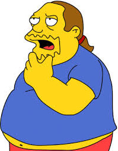

TH
Thunderbird
2022-01-05 04:11 UTC
#1
TA
TakeWalker
2022-01-05 14:48 UTC
#2
Yeah, the inclusion of Benchmark was weird. (Mostly because he hates fighting Omnitron…)
I just barely squeezed out a Mint here. In fact, I could have done it with no heroes down, except I made Dr. Medico ruin himself with a dumb card play, so he was incapped and everyone else was at 4 or 6 HP by the end. :B
SC
Surgeon_Cirujano
2022-01-05 15:31 UTC
#3
I had the same ending with mint.
Dr. Medico had 2 HP and all the card sin my hand would kill him so I just skipped his last turn. All with under 4 HP (except AZ because benchmark was healing him with Onboard cooling systems so 6 HP)
TJ
The_Justifier
2022-01-05 19:12 UTC (in reply to #2)
#4
Once I was done facepalming at the cringy flavor text, I really enjoyed getting my butt handed to me by this fight. I definitely thought I had a chance at pulling it off, it’s just that I had the absolute worst luck three or four times over. First card he pulls after shuffling his deck is TechSing, against Benchmark with ALL his equipment in play, and Wraith still nearly dead from the last time; both went down, and Medico had to fight really hard to stabilize AZ so he could turn things around. He was about to pull it off, and then…Cramped Quarters Combat. Oof. Close one! I have high confidence that I can get the Near Mint, now that I know exactly what he’ll be playing when, and ditto for Mega-City Two. But I probably enjoyed the spontaneous loss more than I will the carefully calculated win.
Not sure if there’s a lore reason for you saying that, or if it’s just because of how equipment-dependent he is (in which case AZ says “…”).
MI
MigrantP
2022-01-06 02:49 UTC
#5
Most heroes in Sentinels don’t actually wear a mask, but these ones do.
TH
Thunderbird
2022-01-06 13:56 UTC
#6
Many of the masks are ineffective against airborne contagions since they don’t cover nose and mouth (ahem, Benchmark). I seem to remember The Letters Page going into which heroes would be vulnerable to lycanthropy. I bet the lineup is similar as to who can catch an Earthly respiratory virus. Gonna guess out of these four that Dr. Medico and Absolute Zero don’t have to worry much about COVID, being made of living energy and having a body temperature to low for anything to live.
MI
MigrantP
2022-01-06 15:50 UTC
#7
I don’t think you need to read into things as much as you are trying to do. I’m not suggesting any heroes are wearing masks effective against Covid-19. These heroes have masks of some form; the end.
RA
Rabit
2022-01-06 16:37 UTC
#8
I think the focus is to have fun, folks. Please don’t forget that. 
TH
Thunderbird
2022-01-06 16:38 UTC (in reply to #7)
#9
Reading way too much into things and engaging in rampant speculation is what I do!

Seriously, though. Thanks for continuing to put these challenges together every week. I’ll continue looking forward to them until there’s a Definitive Edition video game to take their place.  (Hopeful speculation)
(Hopeful speculation)
TH
Thunderbird
2022-01-06 16:42 UTC (in reply to #8)
#10
Yeah, no worries. A good time was had by all! 
TJ
The_Justifier
2022-01-06 21:47 UTC
#11
Well anyway, I got an easy near-mint on the second try; I was prepared to have to completely retrace my steps throughout the game, but this proved to be unnecessary. I didn’t even have any issues playing around the Hostage Situations; my hoop-jumping was basically limited to waiting a couple rounds to play any Equipment, after which Wraith harvested OT’s HP five at a time, and barely slowed down to deal with one Big Bomb, while the other never arrived. No Paparazzi, no Targeting Innocents, no playing of more than two Drones in one turn…it bordered on a cakewalk, and I ended with most heroes in the high teens for HP. Really helped to emphasize how swingy OT is, and how much the long game favors him if you don’t have any deck control.
I kinda want to run this party against OblivAeon sometime (with normal or RC Wraith rather than this generally inferior version, and maybe throw in Legacy or something). I was really impressed with the way they all comboed together… Benchmark healing 2 every time Medico bled himself for 1 (Universal Donor plus Upgraded Memory Unit), and AZ potentially getting 3 healing for each 1 card Benchmark discarded into the Inferno Pod (Cryo Chamber and Multipoint HUD).
DO
doppelgangerung
2022-01-14 01:29 UTC
#12
This one gave me fits.
After the first attempt I was smart enough to use Wraith’s Infrared Eyepiece to control Cosmitron’s uglier one-shots, but it still took a few more tries before the heroes came out on top. In my head I can see the villain, on the brink of victory, suddenly distracted by Benchmark - “Hey, tin man, if train A leaves the West Side station heading East at 40mph, and train B leaves the West Side station heading West at 50mph, guess where they meet?”, as twin Plummeting Monorails delivered the coup de grace.
TJ
The_Justifier
2022-01-14 09:19 UTC
#13
Why is it always trains …
The IREP is definitely good at ruining Omnitron’s day, but its usefulness does diminish as the deck runs out. Eventually, those Flechettes are gonna happen…
DO
doppelgangerung
2022-01-14 15:32 UTC (in reply to #13)
#14
Yeah, it’s a delaying tactic, while you get him positioned just right on the tracks there…
I’m just glad the Cosmic Omnitron variant doesn’t do that distributed consciousness thing where he’s hiding in all the little devices - I wouldn’t have survived the next villain turn!
TJ
The_Justifier
2022-01-14 18:12 UTC
#15
Agreed, the fact that they didn’t reuse that gimmick is a huge piece of what makes the variants feel different imo. I really like being able to ignore the Big Bomb(s) if his own HP is low enough.

 I hope the lucky few who’ve already received their copy are enjoying it. I still have to find some real people to play with first anyway.
I hope the lucky few who’ve already received their copy are enjoying it. I still have to find some real people to play with first anyway. , get the shot (Medico)
, get the shot (Medico) , isolate if infected (Absolute Zero)
, isolate if infected (Absolute Zero)
 … Don’t recall what Benchmark would represent.
… Don’t recall what Benchmark would represent.


 Maybe someone else can confirm.
Maybe someone else can confirm.